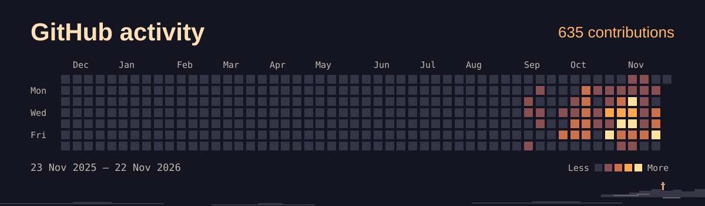

<!doctype html>
<html lang="en">
<meta charset="utf-8">
<meta name="viewport" content="width=device-width, initial-scale=1">
<meta name="color-scheme" content="light dark">
<title>Martin Lema</title>
<style>
  :root { color-scheme: light dark; }
  body { margin: 0; background: #fff; }
  main { max-width: 1012px; margin: 24px auto; padding: 24px; }
  img { display: block; width: 100%; height: auto; }
  a { display: block; }
  @media (prefers-color-scheme: dark) { body { background: #0d1117; } }
  @media (max-width: 600px) { main { margin: 0; padding: 12px; } }
</style>
<main>
  <picture>
    <source media="(prefers-reduced-motion: reduce)" srcset="assets/coast-banner-still.svg">
    
  </picture>
  <a href="https://github.com/Martin-Lema?tab=overview#js-contribution-activity">
    <picture>
      <source media="(max-width: 600px)" srcset="assets/coast-activity-mobile.svg">
      
    </picture>
  </a>
</main>
</html>
